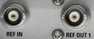

REF IN, REF OUT 1 Connector
 |
REF IN and REF OUT 1 are BNC connectors used as input and output connectors for reference signals.
The function of the connectors depends on the "Frequency Source" setting in the "Sync" section of the setup dialog:
- If the "Internal" reference frequency is active, REF OUT 1 is used as an output connector for the 10 MHz internal reference clock signal of the R&S CMW.
- If the "External" reference frequency is active, REF IN is used as an input connector for an external reference clock signal. The R&S CMW is synchronized to the external reference signal. The external reference signal is also routed to the output connector REF OUT 1.
The external reference signal must meet the specifications in the data sheet.
For settings, see "Sync Settings".